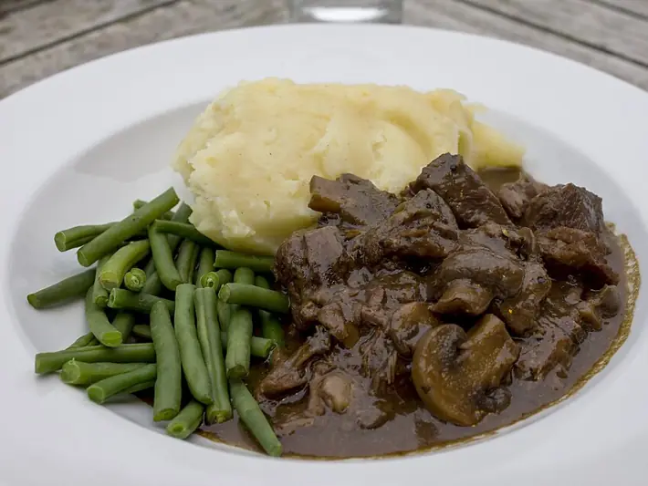

Фото: George Alexander Ishida Newman from Japan, CC BY 2.0
.jpg){kind=link}
Говядина тушёная с фасолью
Мягкая говядина с красной фасолью в томатном соусе
130 мин5 порц.392 ккал на порциюБ 31 · Ж 19 · У 24Интернациональная кухня
Продукты на 5 порц.
- Говядина600 г
- Фасоль консервированная2 шт
- Лук репчатый1 шт
- Морковь1 шт
- Томаты в собственном соку1 шт
- Чеснок2 зуб.
- Паприка1 ч. л.
- Лавровый лист2 шт
- Соль1,5 ч. л.
- Перец чёрный молотый2 щеп.
- Растительное масло1,5 ст. л.
- Вода2 стак.
Как готовить
- Нарежьте говядину кубиками по 3 см и обсушите. Обжарьте на масле в казане на сильном огне 6-8 минут до корочки.
- Добавьте нарезанный лук и тёртую морковь, жарьте на среднем огне 5 минут.
- Положите помидоры в собственном соку, паприку, чеснок, лавровый лист и влейте горячую воду.
- Тушите под крышкой на слабом огне 80-90 минут, пока мясо не станет мягким. Подливайте воду, если соус сильно выкипает.
- Слейте жидкость с фасоли, промойте и добавьте к мясу. Посолите, поперчите и тушите ещё 15 минут.
Совет. Фасоль из банки кладут в конце, иначе она разварится в кашу. Блюдо хорошо хранится в холодильнике 3 дня и замораживается.